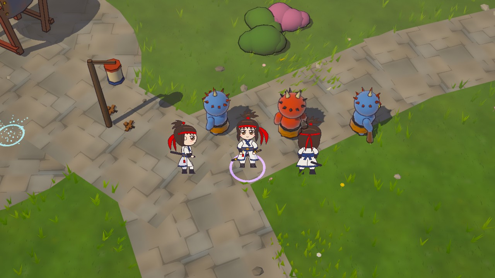
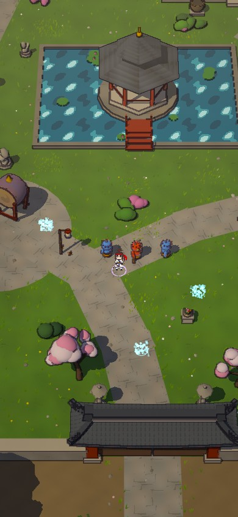

세 방향
정면·측면·뒷면 세 장이면 네 방향을 다 쓸 수 있어요. 왼쪽 보기는 측면을 뒤집어서 써요. 붉은 머리띠와 긴 끈, 높이 묶은 머리, 흰 도포에 남색 띠가 어느 방향에서도 보이게 했어요.
표정
눈과 입만 바꿔서 표정을 만들어요. 기합은 공격, 아픔은 맞았을 때, 놀람은 보스가 나올 때 쓸 생각이에요.
작게 볼 때
게임에서 검객은 화면 높이로 40~120픽셀쯤이에요. 휴대폰 세로 화면이 가장 작아요. 작아져도 붉은 머리띠, 흰 옷과 남색 띠, 검은 칼집으로 알아볼 수 있게 줄무늬와 작은 장식은 빼고 굵은 선만 남겼어요.
게임 화면
월하궁 길에서 도깨비 세 마리 옆에 세웠어요. 오른쪽은 기본 화면에서 검객 부분만 크게 본 거예요. 사진을 누르면 크게 볼 수 있어요.
가까이 · 왼쪽부터 측면, 정면, 뒷면
휴대폰
어떻게 넣나요
- 카메라가 돌지 않아요. 게임 카메라는 늘 같은 각도로 위에서 비스듬히 내려다봐요. 그래서 그림 한 장을 세워 두기만 해도 어색하지 않아요.
- 방향은 그림을 바꿔서 해요. 위로 가면 뒷면, 아래로 가면 정면, 옆으로 가면 측면을 보여 줘요.
- 외곽선은 그림이 가져요. 게임이 3D 물체에 긋는 잉크 선을 그림에는 긋지 않게 해서, 네모 테두리가 생기지 않아요.
- 게임 코드는 조금만 바꿔요. 지금 3D 캐릭터 대신 같은 일을 하는 그림 캐릭터를 하나 만들어서 끼우면 돼요. 이동·전투·저장은 그대로예요.
넣을 때 같이 손볼 것:
- 그림자: 사진에서는 발밑 그림자가 없어요. 넣을 때 발밑에 둥근 그림자를 깔아요.
- 밤: 그림은 조명을 받지 않아서 밤에도 밝아요. 밤에는 그림을 같이 어둡고 푸르게 칠해요.
- 맞았을 때 번쩍임, 잔상, 왼쪽 위 얼굴 그림, 꾸미기 기운·날개도 그림에 맞춰 다시 붙여요.
- 칼 끝 위치: 공격 효과가 칼 끝에서 나오도록, 그림마다 칼 끝 자리를 적어 둬요.
그림은 제가 만들 수 있어요
위 그림은 모두 제가 코드로 그린 벡터 그림이라 얼마든지 고칠 수 있고, 걷기·공격·피격 동작도 같은 방식으로 그려요. 더 손맛 있는 그림을 원하시면 아래 파일을 준비해 주시면 그대로 끼울 수 있어요.
| 파일 | 내용 | 형식 |
|---|
| 방향 그림 | 정면·측면(오른쪽 보기)·뒷면, 서 있는 자세 | PNG, 투명 배경, 높이 512픽셀, 발끝을 아래 가운데에 |
| 걷기 | 방향마다 6장 | 같은 크기 PNG 또는 한 줄로 이어 붙인 시트 |
| 공격 | 방향마다 4~6장 (휘두르기 준비 → 베기 → 마무리) | 같음, 칼 끝 위치를 따로 적어 주시면 좋아요 |
| 피격 | 방향마다 2장 (움찔 → 돌아오기) | 같음 |
| 표정 | 얼굴만 5장 (기본·웃음·기합·놀람·아픔) | PNG, 얼굴 부분만 |
AI 그림 생성 도구로 만들 수도 있지만 크레딧이 들어서, 원하실 때만 쓸게요.
다음 순서
- 검객 모습 확인 — 고칠 곳을 말씀해 주세요 (머리, 얼굴, 옷, 색, 비율 등).
- 검객을 게임에 넣고 걷기·공격·피격 동작 만들기.
- 창술사·궁수·도사와 요정, 몬스터를 같은 그림체로.